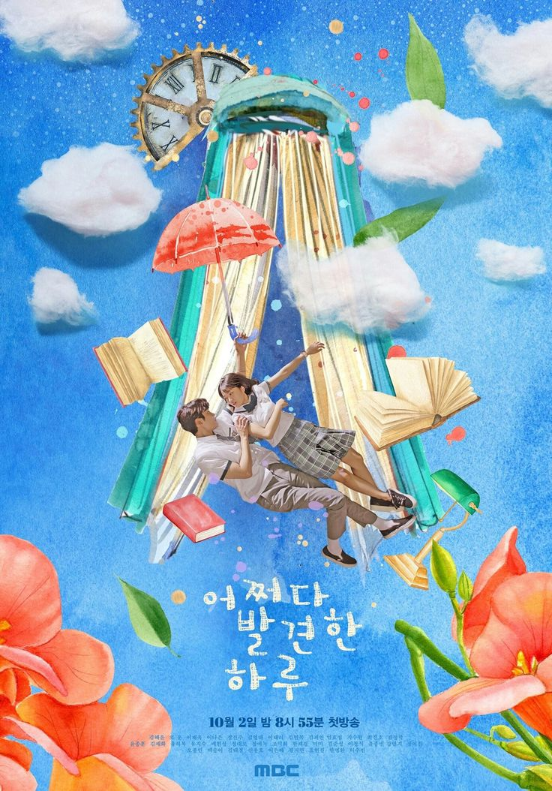
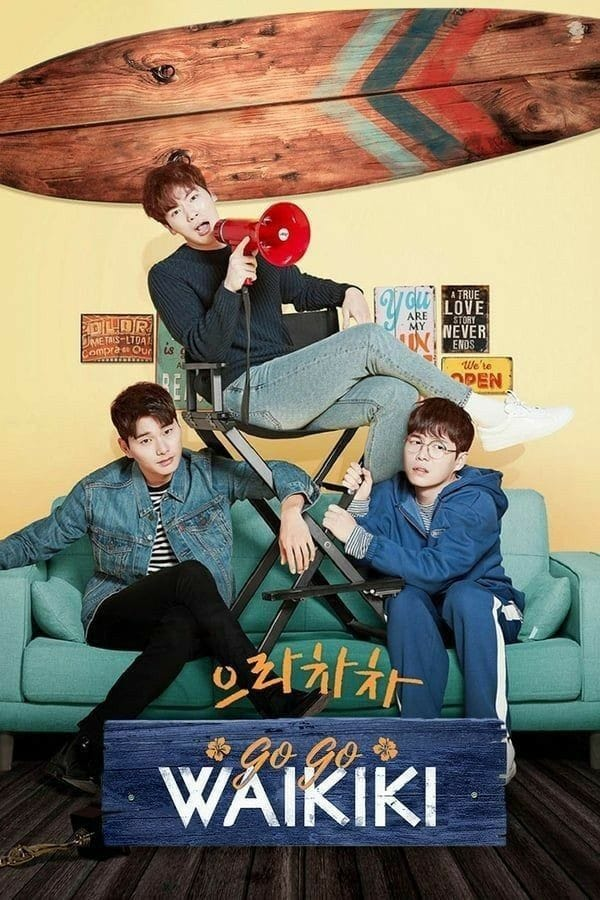
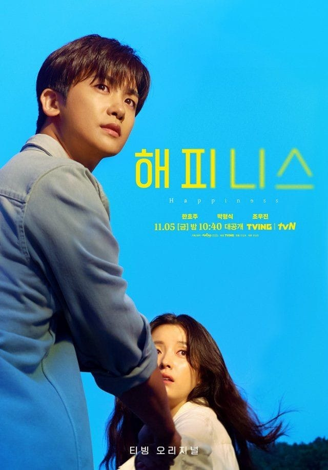

Extraordinary You

Eun Dan-oh yang bersekolah di sebuah akademi bergengsi. Suatu hari, ia mengetahui bahwa dia dan semua orang di sekolahnya sebenarnya adalah karakter dalam manhwa yang berjudul Secret. la memiliki kondisi jantung yang semakin memburuk, Dan-oh adalah karakter pendukung yang ditakdirkan segera meninggal dalam cerita ini
Strong Girl Bong Soon
Bong-Soon lahir dengan kekuatan seperti manusia super. Kekuatannya adalah turun temurun dan hanya diturunkan kepada para wanita di keluarganya. Suatu hari, Bong-Soon membantu seorang sopir bus yang sedang diserang oleh seorang preman. Disitulah dia bertemua Min-Hyu, Min-Hyuk adalah CEO perusahaan game video Ainsoft. Dia baru-baru ini menerima ancaman anonim dan bahkan diikuti oleh orang yang tidak dikenal. Min-Hyuk percaya Bong-Soon akan menjadi pengawal yang hebat dengan kekuatannya yang luar biasa. Selain menawarkan bayaran tinggi kepada Bong-Soon, ia bahkan menawarkannya kesempatan untuk bekerja di departemen perencanaan perusahaan game-nya jika ia berhasil.
True Beauty

Im Ju-Kyung, siswa sekolah menengah yang memiliki kompleks tentang penampilannya sejak kecil. Untuk menyembunyikan wajahnya yang polos, Im Ju-Kyung selalu memakai make-up. Keahlian make-upnya yang luar biasa membuatnya cantik.
Welcome to Waikiki

Tiga pria muda bergabung dalam sebuah usaha wisma tamu dengan satu impian, untuk membiayai proyek film mereka sendiri. Namun, usaha itu sama sekali tidak menguntungkan.
Happiness

Sebuah thriller apokaliptik yang terjadi di masa di mana penyakit menular telah menjadi normal baru.